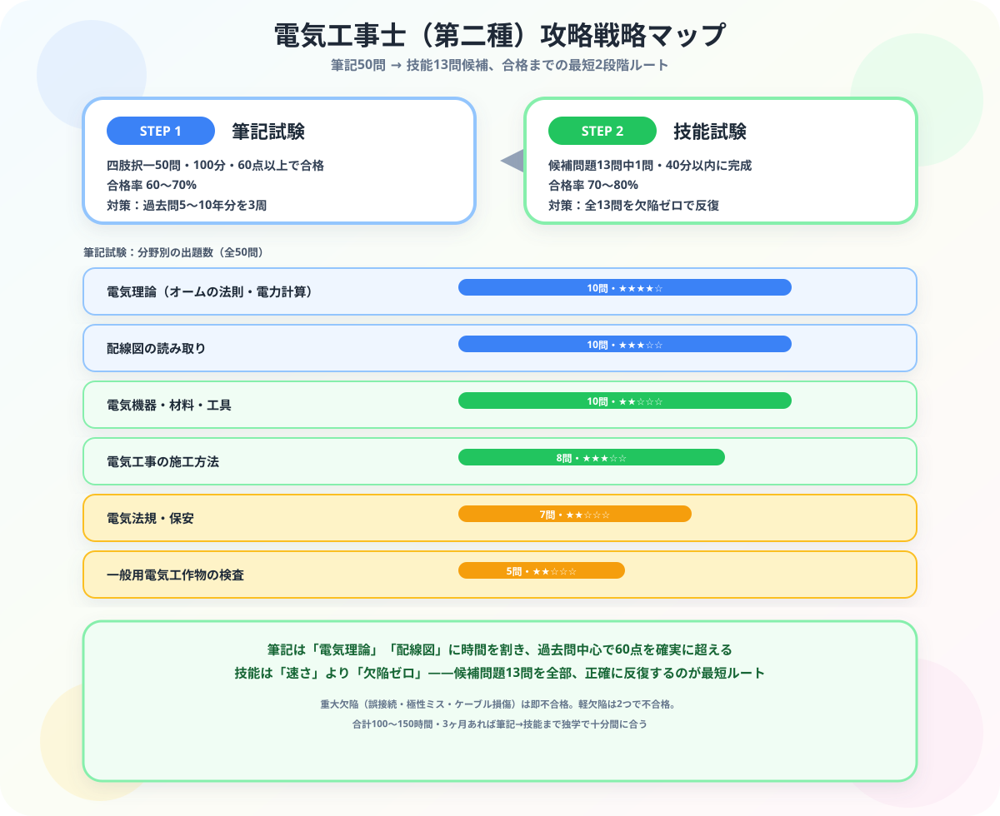

電気工事士（第二種）独学合格ガイド【2026年版】
こんにちは、若葉です！
正直に言うと、私は毎日机にかじりついて簿記の理論と計算に格闘している「THE・文系な日商簿記1級受験生」なので、初めて第二種電気工事士の技能試験の候補問題（単線図）を見たときは「うわっ、なんじゃこりゃ……線がグチャグチャに絡み合っていて、記号の意味も工具の名前も1つもわからん！これを40分で完成させるとか無理ゲーすぎる！！」と本気で固まりました（笑）。
でも、簿記1級の「仕訳」も、電気工事士の「配線」も、実はやっていることは同じです。与えられたルール通りにパーツを正確に組み合わせるだけの論理パズルなんです。数字ばかり追いかける毎日だからこそ、私は「手を動かして"モノ"が完成する」電気工事士の世界にすごく憧れます。
今回は、そんな私が難関資格の学習で培った逆算・パターン化の視点をベースに、学科試験は過去問と公式情報で準備し、技能試験は候補問題13問を「線繋ぎパズル」として攻略する独学ルートをナビゲートします。
また、モチベ維持のために、記事の末尾のほうにある【いいねボタン】をポチッと押してもらえると、めちゃくちゃ嬉しいです！
第二種電気工事士の基本情報

| 項目 | 内容 |
|---|---|
| 試験実施 | 年2回（上期：5〜7月 / 下期：10〜12月） |
| 学科試験 | 四肢択一50問・100分（60点以上合格）。筆記方式またはCBT方式 |
| 技能試験 | 事前公表の候補問題13問から1問出題・40分以内に完成 |
| 学科合格率 | 年度・実施回により変動。最新値は公式発表を確認 |
| 技能合格率 | 70〜80% |
| 受験資格 | なし（年齢・学歴不問） |
| 有効性 | 学科合格は翌年度まで免除（技能のみ受験可） |
学科試験の出題分野と配点
| 分野 | 問題数目安 | 難易度 | 攻略ポイント |
|---|---|---|---|
| 電気理論（オームの法則・電力計算） | 約10問 | ★★★★☆ | 公式を覚えて計算問題を繰り返す。電卓不可なので暗算練習も |
| 配線図の読み取り | 約10問 | ★★★☆☆ | 図記号を全部覚える。過去問の図を繰り返し見ると慣れる |
| 電気機器・材料・工具 | 約10問 | ★★☆☆☆ | 写真問題が多い。実物をネットで確認しながら暗記 |
| 電気工事の施工方法 | 約8問 | ★★★☆☆ | 金属管・合成樹脂管・ケーブルの施工ルールを整理 |
| 電気法規・保安 | 約7問 | ★★☆☆☆ | 電気設備技術基準の数字（離隔距離・高さ等）を覚える |
| 一般用電気工作物の検査 | 約5問 | ★★☆☆☆ | 絶縁抵抗値・接地抵抗値の基準を数字で記憶 |
技能試験の対策（最重要）
技能試験は候補問題13問が事前公表され、本番はそのうち1問が出題されます。40分以内に欠陥なく完成させれば合格です。
そしてこのRPGには、クリアを一瞬で無効化する「即死トラップ」が1つだけ存在します。それがリングスリーブの刻印ミスです。芯線の本数・太さの組み合わせによって、圧着後に刻印すべき記号（○・小・中）が変わりますが、これを間違えると他がどれだけ完璧でも重大欠陥＝即不合格。時間内に完成させることより先に、「この組み合わせなら刻印は何か」を反射的に判断できるまで刻印早見表を叩き込むのが、技能試験攻略の最優先事項です。
技能試験の欠陥判定基準（主なもの）
| 欠陥の種類 | 具体例 |
|---|---|
| 重大欠陥（即不合格） | 配線の誤接続・極性の間違い・ケーブル損傷 |
| 軽欠陥（2つで不合格） | 絶縁被覆の傷・心線の露出長さの超過・ランプレセプタクルの巻き方向の誤り |
技能試験の練習ステップ
- 工具を揃える：ペンチ・ドライバー・電工ナイフ・ストリッパー（自動式推奨）・スケール
- 単線図から複線図を書く練習：候補問題13問全部の複線図を書けるようにする
- 基本作業の反復：ケーブルの被覆剥き・輪作り・リングスリーブ圧着を速くする
- 候補問題を全問1周：40分以内に完成させる感覚をつかむ
- 本番想定の反復練習：苦手な問題を中心に3〜5周する
独学3ヶ月合格スケジュール（上期試験を目標）
| 時期 | 学習内容 | 目安時間/週 |
|---|---|---|
| 2〜3月（学科対策） | 過去問5年分を解く → 弱点分野をテキストで補強 | 8〜12時間 |
| 4月（学科仕上げ） | 過去問10年分を仕上げ・模擬試験を解く | 10〜15時間 |
| 5月（技能対策） | 工具購入・複線図の練習・基本作業の反復 | 15〜20時間 |
| 6月（技能仕上げ） | 候補問題全13問を40分以内で完成させる練習 | 20〜25時間 |
第一種電気工事士へのステップアップ
| 資格 | 作業範囲 | 取得要件 |
|---|---|---|
| 第二種電気工事士 | 一般住宅・小規模店舗（600V以下） | 試験合格のみ |
| 第一種電気工事士 | 工場・ビル・大規模施設（最大電力500kW未満） | 試験合格＋実務経験3年（免状交付条件） |
受験生がよく引っかかる3つの落とし穴
- 複線図を書かずに単線図のまま作業を始めてしまう：単線図を見ただけで「なんとなく」配線を始めると、途中で結線を間違えて時間切れになります。面倒でも必ず複線図（完全な地図）を描き切ってから手を動かす習慣をつけてください。
- 電気理論を「捨て科目」にして技能だけに時間を使う：技能試験のインパクトが大きいため軽視されがちですが、電気理論は学科50問中約10問と配点が大きく、ここを捨てると60点ラインを割り込みます。技能対策と並行して計算問題は最後まで解き続けてください。
- 候補問題13問を「1周しただけ」で満足してしまう：1回完成させただけでは、本番の緊張下で手が止まります。工具の使い方やリングスリーブの刻印判断が反射的に出るまで、最低3周は繰り返し練習することが合格の分かれ目です。
まとめ
- 学科試験は過去問で弱点を見つけ、公式情報とテキストで補強する
- 技能試験は候補問題13問が事前公表される。全問練習が必須
- 技能は「欠陥なし」が条件。正確さを速さより優先する
- 合計学習時間の目安は100〜150時間。3ヶ月で十分対応できる
- 第二種合格後は実務経験を積んで第一種へのステップアップを目指せる
「なんじゃこりゃ」な単線図が、自分の手で完成する喜びに変わります
机の上の勉強しかしてこなかった私にとって、電気工事士の技能試験は「知識がモノになる」新鮮な体験でした。複線図という地図さえ描ければ、あとはパズルを組み立てるだけ。ものづくりの楽しさを、ぜひ皆さんにも味わってほしいです。この記事が「あ、そういうことか！」につながったら、私の執筆のモチベーション維持のために、この下にある【いいねボタン】をポチッと押してもらえると、めちゃくちゃ嬉しいです！
Study Questで筆記・技能それぞれの練習時間を記録しながら、合格まで一緒に走り抜きましょう！